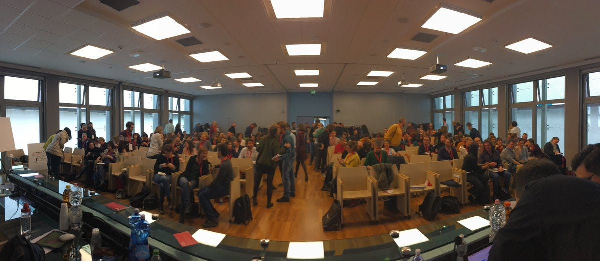
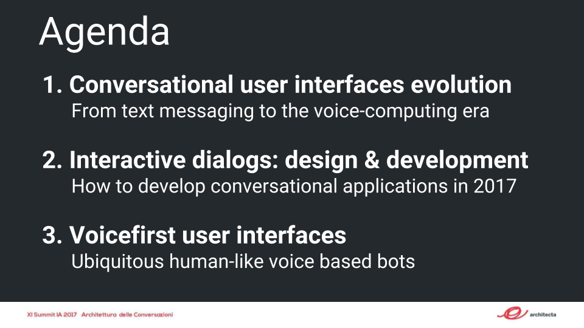
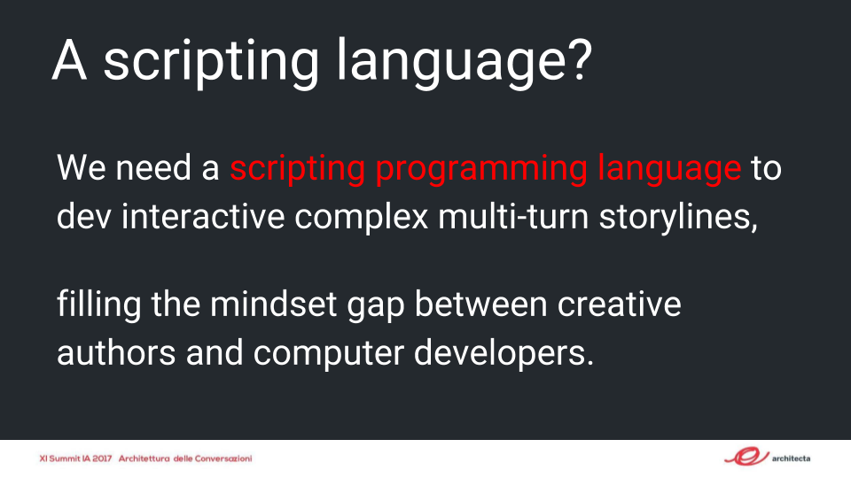
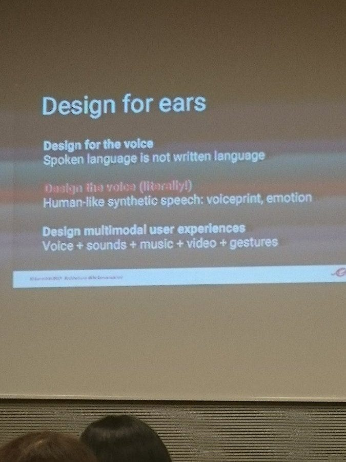
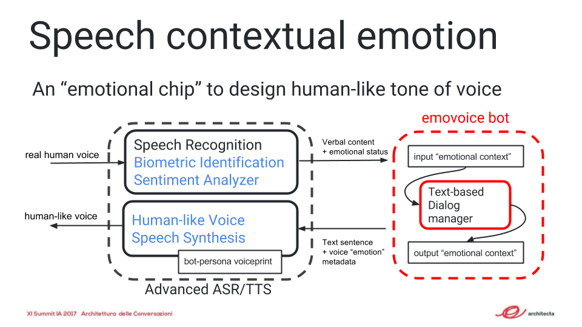
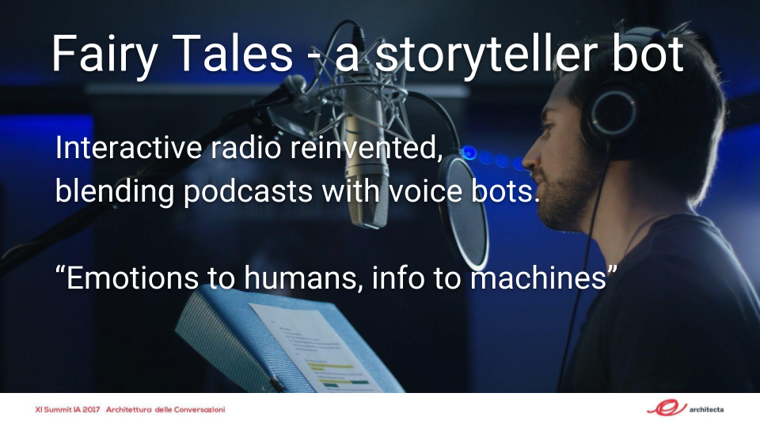
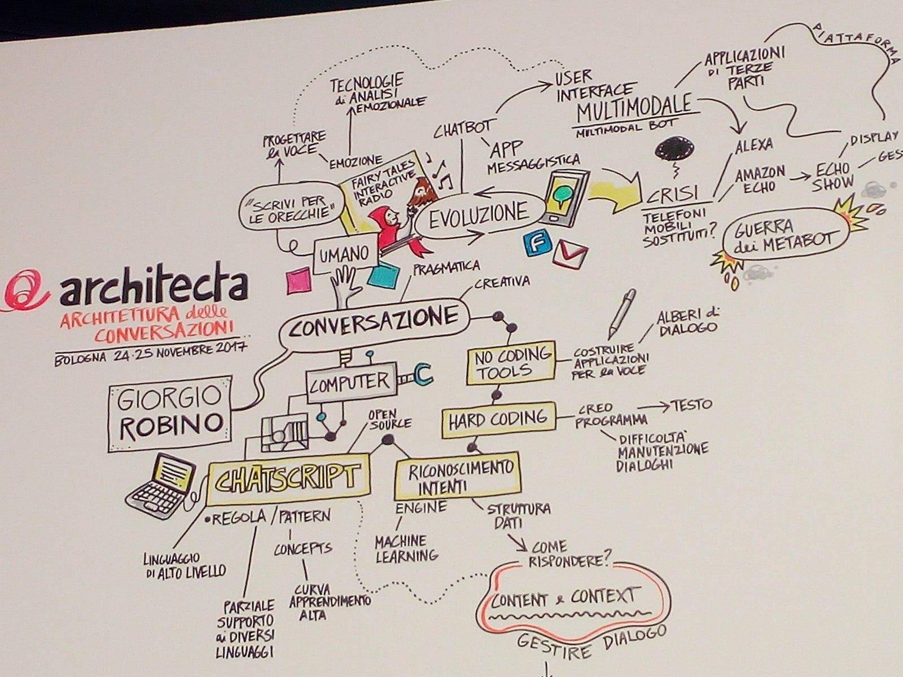
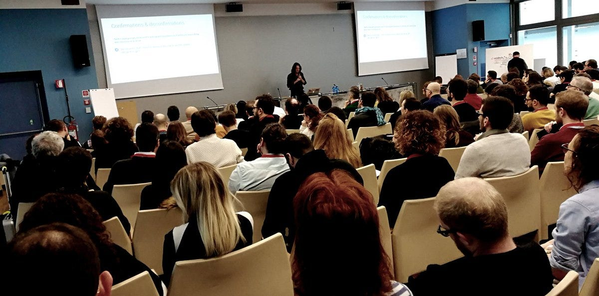
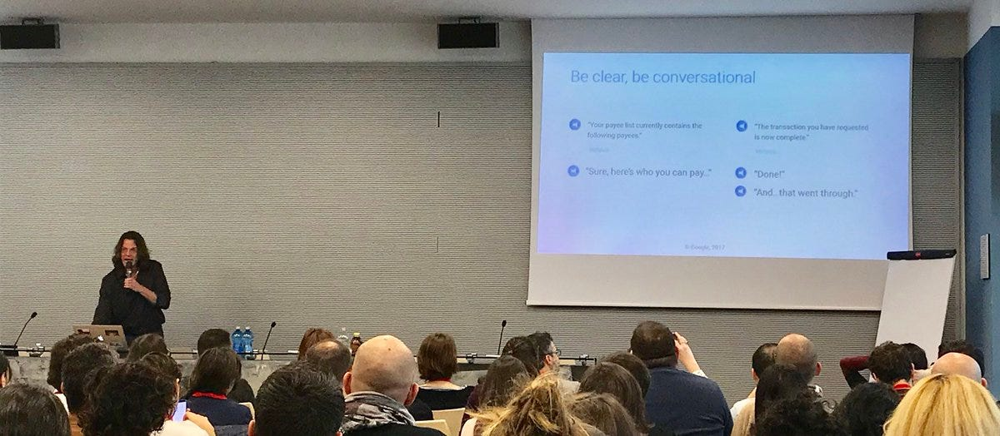
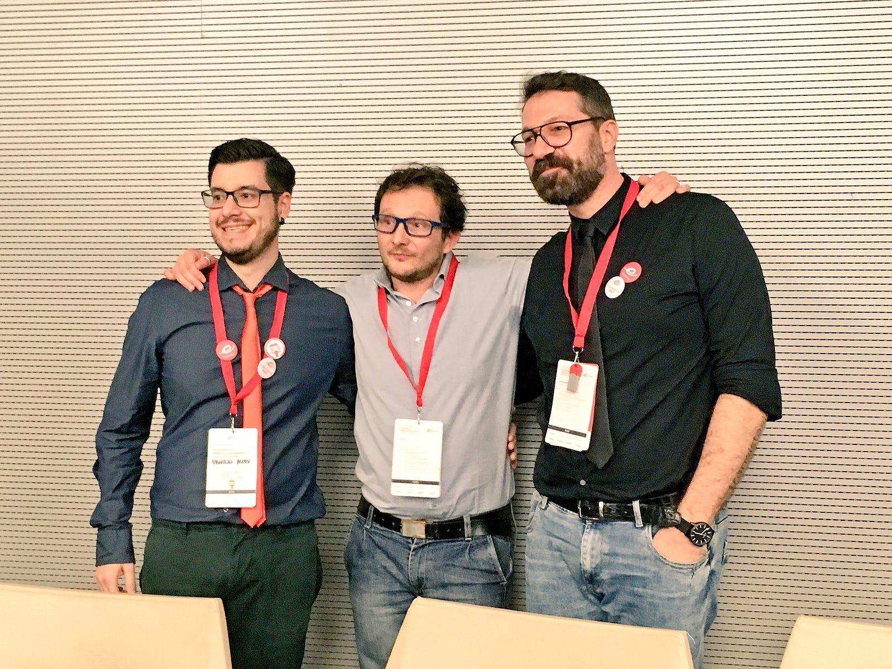

Dialoghi uomo-macchina che emozionano le orecchie?
Il mio talk al XI Summit IA 2017 — Architettura delle Conversazioni

Il 24–25 Novembre 2017 a Bologna si è tenuto l’undicesimo Summit italiano di architettura dell’informazione , a cui ho avuto piacere di partecipare con il talk dal titolo:
L’informazione è nella sceneggiatura?
Progettazione di dialoghi uomo-macchina.
Nella preparazione del focus del talk, il mio intento inizialmente era quello di esporre alcuni design pattern conversazionali e la loro implementazione in linguaggio ChatScript, ma alla fine, supponendo che il pubblico in gran parte non fosse composto da addetti ai lavori (rispetto la progettazione conversazionale uomo-macchina) ho optato per una trattazione più ampia su tre sezioni:

Ho parlato dello stato dell’arte dei chatbots ed i voicebots, accennando ai metabots che oggi paiono dominare la scena degli assistenti vocali: Google Assistant ed Amazon Alexa.
Ho poi accennato agli strumenti di sviluppo tipici, dall'hard-coding, all'utilizzo dei linguaggi di scripting, introducendo per sommi capi il più longevo di questi ultimi: ChatScript.

Infine, non potevo non fare un piccolo approfondimento sulle nuove possibilità delle Voice User Interfaces; i problemi progettuali sono molto più ampi rispetto ai dialoghi testuali. Progettare sistemi conversazionali vocali significa infatti abbracciare nuove dimensioni: per esempio, quelle soniche relative alla produzione di voci sintetiche “human-like”.

Sebbene i sistemi di speech recognition (ASR) e text to speech (TTS) siano in continua evoluzione e incredibile miglioramento, uno dei problemi che attualmente hanno un po tutti i bot parlanti è la monotonia emozionale della voce (sintetica). Per esempio Alexa e Google Assistant permettono un numero ristretto di differenti varianti di impronta vocale. Il tono di voce e la prosodia sono modulabili in modo molto limitato.
Come dare emozione ad un parlato sintetico?
Uno degli strumenti in mano agli sviluppatori è l’SSML, un linguaggio che permette di “taggare” singole parole e frasi, permettendo di instillare un poco di prosodia in un sistema di sintesi vocale. L’SSML permette di introdurre pause e corretta pronuncia di numeri e di termini particolari in lingua straniera.
L’Expressive SSML è un dialetto SSML proposto da IBM, che permette di definire un’emozione contestuale ad un prompt (una intera frase, recitata dal voicebot). Per esempio è possibile dare ad una frase un tono “buona notizia” oppure di “scuse”:
<express-as type=”GoodNews”> I am pleased to inform you that your mortgage loan application was approved. </express-as>
<express-as type=”Apology”> Is there any way I can make this up to you? </express-as>
Questo è un passo avanti interessante rispetto alle funzionalità di normalizzazione del testo da recitare, ma siamo ancora a livelli elementari di un parlato automatico che ha poca emozione. La mia previsione è quindi quella di una nuova tecnologia che, con una programmazione non procedurale ma dichiarativa,
- in input: permetta agli sviluppatori di catturare il “sentiment”, a partire dal parlato umano, anche dalle sue componenti non-verbali.
- in output: permetta di dare emozione ad una frase che il bot recita, in funzione sia di un’impronta vocale base del bot-persona (ad esempio una brand-voice) e sulla base di un sistema di modulazione “emozionale” funzione del contesto. Come ho schematizzato:

In conclusione del mio talk, ho presentato il mio progetto personale Fairy Tales (inventato con Giuditta Del Buono), dove i bot possono anche trasmettere poca emozione perché questa “è da lasciare” agli umani, in una specie di “radio interattiva” reinventata, che miscela podcasts realizzati da attori umani a bot che funzionano come listener assistants, completando i contenuti pre-registrati.

Fairy Tales nasce dall'idea di un voicebot per l’ascolto di favole della buonanotte per bambini, ma l’idea è valida anche per ambiti differenti, per esempio l’e-learning, le news, etc.
Le mie slides sono disponibili qui: http://bit.ly/iasummit

James Giangola e le massime conversazionali di Paul Grice
Alla conferenza ci sono stati interventi tutti interessanti, e tra tutti ha spiccato quello del linguista nr. 1 di Google James Giangola (Creative Lead, Conversation Design & Persona)!


L’intervento di James è stato incentrato sull'introduzione al principio di cooperazione, un argomento specifico della pragmatica linguistica. La sua relazione è stata densa ma allo stesso tempo semplice, come solo i più grandi sanno fare!
Consiglio la lettura del bell'articolo di Toni Fontana:
I video della conferenza:
Last but not list, ringrazio marco tagliavacche per avermi invitato e gli organizzatori e i volontari che hanno contribuito alla realizzazione dell’evento di Architecta: un grandissimo lavoro!

☞ Please tap or click “︎❤” to help to let Giorgio and others know that you appreciated this piece.
Originally published on Medium.